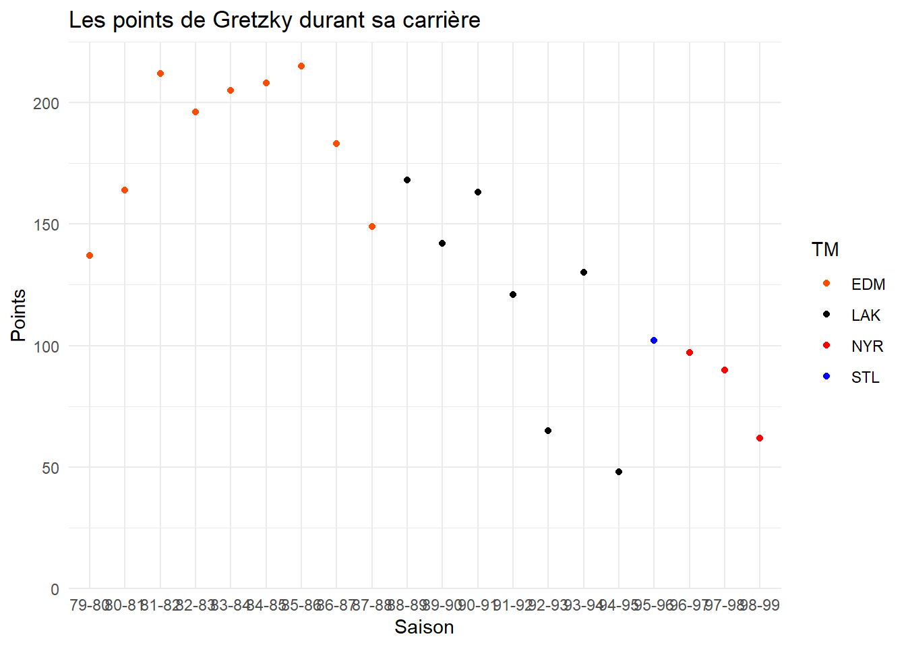
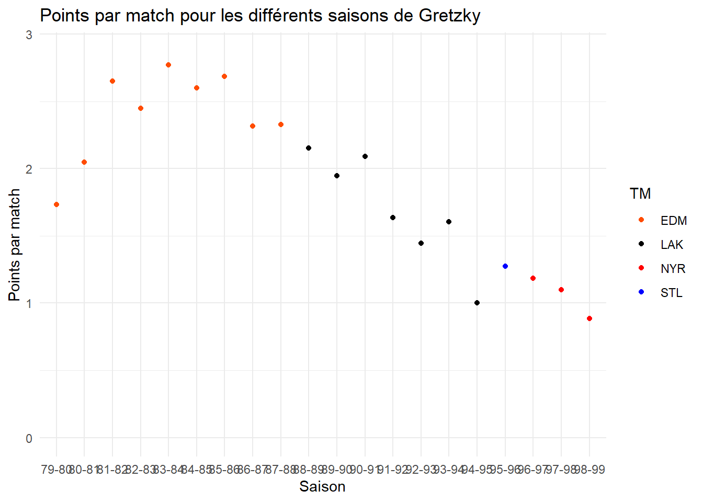

#### Scraping de données de Hockeys sur glace ####
# 1 - Libraries ----
library(tidyverse)── Attaching core tidyverse packages ──────────────────────── tidyverse 2.0.0 ──
✔ dplyr 1.1.4 ✔ readr 2.1.4
✔ forcats 1.0.0 ✔ stringr 1.5.1
✔ ggplot2 3.4.4 ✔ tibble 3.2.1
✔ lubridate 1.9.3 ✔ tidyr 1.3.0
✔ purrr 1.0.2
── Conflicts ────────────────────────────────────────── tidyverse_conflicts() ──
✖ dplyr::filter() masks stats::filter()
✖ dplyr::lag() masks stats::lag()
ℹ Use the conflicted package (<http://conflicted.r-lib.org/>) to force all conflicts to become errorslibrary(lubridate) # Package pour gérer des données temporelles
#install.packages("rvest")
library(rvest) # Package pour le scrapingWarning: le package 'rvest' a été compilé avec la version R 4.3.3
Attachement du package : 'rvest'
L'objet suivant est masqué depuis 'package:readr':
guess_encodinglibrary(dplyr)
library(ggplot2)
# 2 - Scraping ----
hockey_data <- read_html("https://www.statmuse.com/nhl/player/wayne-gretzky-2501")
hockey_data1 <- hockey_data %>%
html_elements("table")%>%
pluck(1) %>%
html_table(fill = TRUE)
#Nettoyage:
is_convertible <- function(x) {
all(grepl("^-?\\d+\\.?\\d*$", x, ignore.case = TRUE))
}
hockey_data1 <- hockey_data1 %>%
rename(Season = 1) %>%
head(-2) %>%
mutate_if(is_convertible, as.numeric) %>%
select(-ncol(.)) %>%
mutate(TM = replace(TM, TM == "TOT", "STL")) %>%
mutate(Season = gsub("19", "", Season))
glimpse(hockey_data1)Rows: 20
Columns: 16
$ Season <chr> "79-80", "80-81", "81-82", "82-83", "83-84", "84-85", "85-86", …
$ TM <chr> "EDM", "EDM", "EDM", "EDM", "EDM", "EDM", "EDM", "EDM", "EDM", …
$ GP <dbl> 79, 80, 80, 80, 74, 80, 80, 79, 64, 78, 73, 78, 74, 45, 81, 48,…
$ G <dbl> 51, 55, 92, 71, 87, 73, 52, 62, 40, 54, 40, 41, 31, 16, 38, 11,…
$ A <dbl> 86, 109, 120, 125, 118, 135, 163, 121, 109, 114, 102, 122, 90, …
$ P <dbl> 137, 164, 212, 196, 205, 208, 215, 183, 149, 168, 142, 163, 121…
$ `+/-` <dbl> 14, 41, 80, 61, 78, 100, 71, 69, 39, 15, 8, 30, -12, 6, -25, -2…
$ PIM <dbl> 21, 28, 26, 59, 39, 52, 46, 28, 24, 26, 42, 16, 34, 6, 20, 6, 3…
$ PPG <dbl> 13, 15, 18, 18, 20, 8, 11, 13, 9, 11, 10, 8, 12, 0, 14, 3, 6, 6…
$ PPA <dbl> 22, 38, 39, 36, 27, 36, 43, 33, 40, 42, 30, 51, 42, 24, 47, 19,…
$ SHG <dbl> 1, 4, 6, 6, 12, 11, 3, 7, 5, 5, 4, 0, 2, 2, 4, 0, 1, 0, 0, 0
$ SHA <dbl> 1, 3, 2, 4, 11, 7, 15, 6, 4, 10, 2, 1, 2, 1, 3, 3, 0, 1, 0, 0
$ GWG <dbl> 6, 3, 12, 9, 11, 7, 6, 4, 3, 5, 4, 5, 2, 1, 0, 1, 3, 2, 4, 3
$ OTG <int> NA, NA, NA, NA, 0, 0, 1, 0, 0, 0, 1, 0, 0, 0, 0, 0, 0, 0, 0, 0
$ S <dbl> 284, 261, 370, 348, 326, 354, 350, 288, 211, 303, 236, 212, 215…
$ `S%` <dbl> 18.0, 21.1, 24.9, 20.4, 26.7, 20.6, 14.9, 21.5, 19.0, 17.8, 16.…# 3 - Analyse ----
# 3.1 Analyse statisque:
#Analyse de points par match / but par match et passe par match
# Calculer les buts par match (B/M)
goals_per_game <- sum(hockey_data1$G) / sum(hockey_data1$GP)
#Calculer les passes par match (A/M)
assists_per_game <- sum(hockey_data1$A) / sum(hockey_data1$GP)
# Calculer les points par match (Pts/M)
points_per_game <- sum(hockey_data1$P) / sum(hockey_data1$GP)
goals_per_game #0.6[1] 0.6012105assists_per_game #1.32[1] 1.320108points_per_game #1.92[1] 1.921318#Sommaire des statistiques:
summary_stats <- summary(hockey_data1)
summary_stats Season TM GP G
Length:20 Length:20 Min. :45.00 Min. : 9.00
Class :character Class :character 1st Qu.:73.75 1st Qu.:24.50
Mode :character Mode :character Median :79.00 Median :40.50
Mean :74.35 Mean :44.70
3rd Qu.:80.00 3rd Qu.:56.75
Max. :82.00 Max. :92.00
A P +/- PIM
Min. : 37.00 Min. : 48.0 Min. :-25.00 Min. : 6.00
1st Qu.: 77.25 1st Qu.:100.8 1st Qu.:-11.25 1st Qu.:20.75
Median :105.50 Median :145.5 Median : 14.50 Median :28.00
Mean : 98.15 Mean :142.8 Mean : 26.00 Mean :28.85
3rd Qu.:120.25 3rd Qu.:186.2 3rd Qu.: 63.00 3rd Qu.:35.25
Max. :163.00 Max. :215.0 Max. :100.00 Max. :59.00
PPG PPA SHG SHA GWG
Min. : 0.00 Min. :19.00 Min. : 0.00 Min. : 0.0 Min. : 0.00
1st Qu.: 6.00 1st Qu.:26.50 1st Qu.: 0.75 1st Qu.: 1.0 1st Qu.: 2.75
Median :10.50 Median :36.00 Median : 3.50 Median : 2.5 Median : 4.00
Mean :10.20 Mean :34.30 Mean : 3.65 Mean : 3.8 Mean : 4.55
3rd Qu.:13.25 3rd Qu.:41.25 3rd Qu.: 5.25 3rd Qu.: 4.5 3rd Qu.: 6.00
Max. :20.00 Max. :51.00 Max. :12.00 Max. :15.0 Max. :12.00
OTG S S%
Min. :0.000 Min. :132.0 Min. : 6.80
1st Qu.:0.000 1st Qu.:208.5 1st Qu.:11.70
Median :0.000 Median :248.5 Median :17.35
Mean :0.125 Mean :254.4 Mean :16.48
3rd Qu.:0.000 3rd Qu.:308.8 3rd Qu.:20.45
Max. :1.000 Max. :370.0 Max. :26.70
NA's :4 # Analyse de corrélation entre les pénalités et les points/tirs au but ####
# Calculer la correlation entre PIM et Pts
correlation_pts_pim <- cor(hockey_data1$PIM, hockey_data1$P)
# Calculer la correlation entre PIM et Shots
correlation_shots_pim <- cor(hockey_data1$PIM, hockey_data1$S)
correlation_pts_pim #0.675[1] 0.6755559correlation_shots_pim #0.711[1] 0.7109141# 3.2 Graphique ----
# Nuage de point sur la performance de Gretzky au travers des saisons:
team_colors <- c("EDM" = "#FF4C00", # Orange
"LAK" = "black", # Noir
"STL" = "blue", # Navy Blue
"NYR" = "red") # Rouge/Bleu
graph1 <- ggplot(data = hockey_data1,
aes(x = Season, y = P, color = TM)) +
geom_point() +
scale_color_manual(values = team_colors) +
labs(title = "Les points de Gretzky durant sa carrière",
x = "Saison",
y = "Points") +
scale_y_continuous(limits = c(0, max(hockey_data1$P) + 10), expand = c(0, 0)) +
theme_minimal()
graph1
# graphique 2:
hockey_data1 <- hockey_data1 %>%
mutate(Pts_GP = P / GP)
graph2 <- ggplot(data = hockey_data1,
aes(x = Season, y = Pts_GP, color = TM)) +
geom_point() +
scale_color_manual(values = team_colors)+
labs(title = "Points par match pour les différents saisons de Gretzky",
x = "Saison",
y = "Points par match") +
scale_y_continuous(limits = c(0, max(hockey_data1$Pts_GP) + 0.1)) +
theme_minimal()
graph2